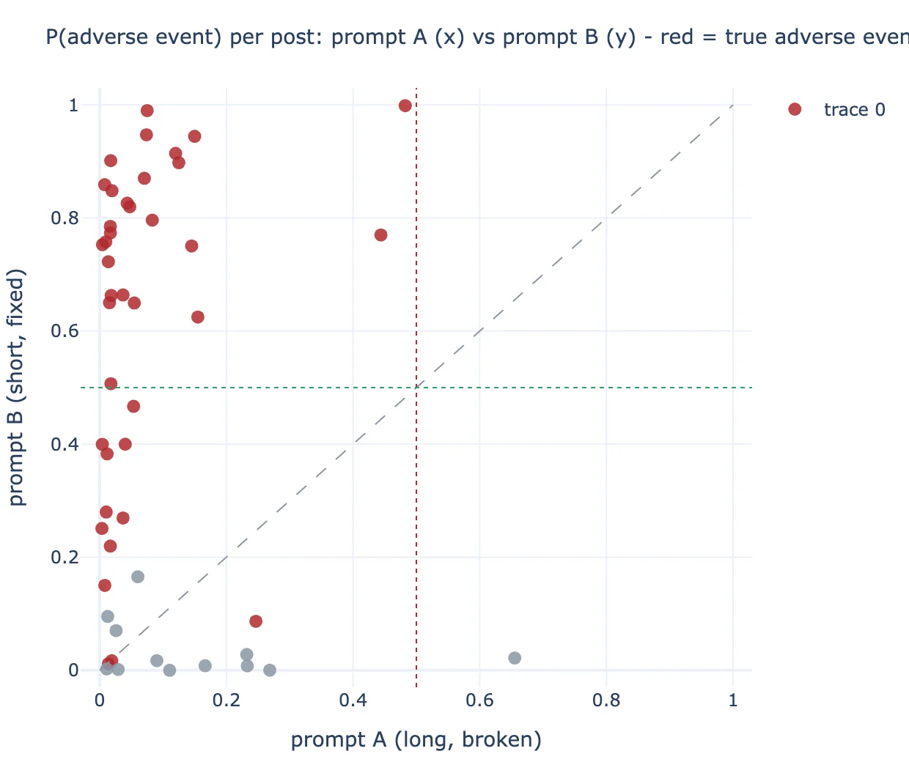
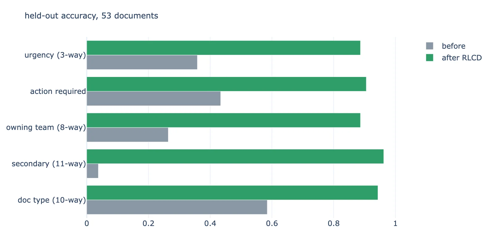
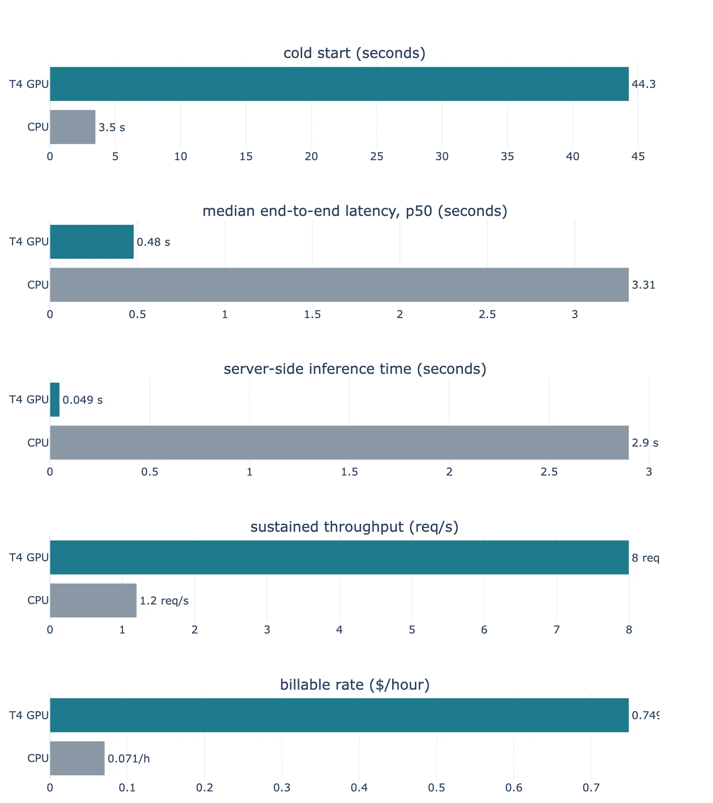
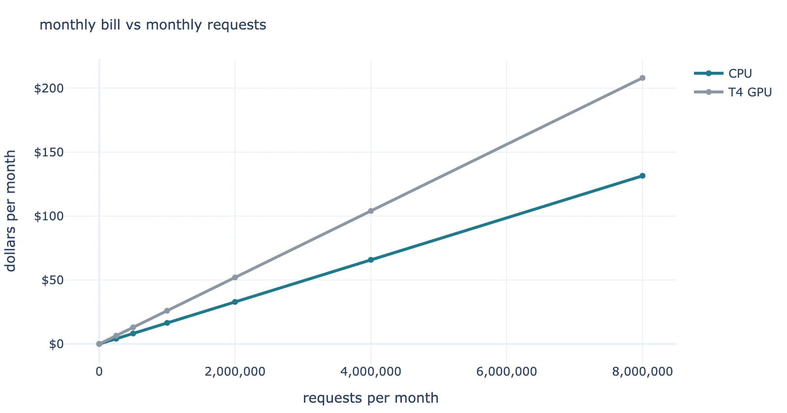

written by Eric J. Ma on 2026-10-13 | tags: laya decision models pharmacovigilance fine-tuning calibration modal marimo machine learning open source pharma
Laya is an open-source decision model that answers structured questions in a single forward pass, no text generation involved. I ran it through email triage, multilingual postmarket surveillance, real pharma document classification, a fine-tuning experiment, and a Modal deployment to see where it shines, where it breaks, and what its probabilities are really worth. Curious whether a 421M-parameter model can do the boring 90% of an AI pipeline cheaper than a giant LLM? Read on to find out!
When a closed vendor ships an AI product with no papers and no weights, my first instinct is to look for the open source version of it. Earlier this month I found an alternative to the newly-released Jev model: Laya, released under Apache 2.0 by ConvAI Innovations. Jev is TypeSafe's closed "decision model" API, and Laya is the open source answer to it. I was curious about one thing: how well does it work?
So I gave it a week of evenings and a pharma-shaped workload. I used it in the following scenarios:
This post walks through what worked, what broke, and what you need to know before you build on top of Laya.
By the way, everything I write about here ships as a set of seven companion marimo notebooks in the laya-pharma-surveillance repo, with one notebook per experiment, and every figure re-rendering from the committed data. To run them yourself:
git clone https://github.com/ericmjl/laya-pharma-surveillance.git cd laya-pharma-surveillance uvx marimo edit --sandbox notebooks/
(You won't need to worry about dependencies; every notebook carries its own dependency definition!)
Laya, Jev, and the myriad of System One Models that have recently sprung up, are the philosophical opposite of an LLM. You hand it a state (an email, a support ticket, a JSON blob) plus a set of typed questions, and it returns typed answers with probability distributions in one forward pass.
Three primitives cover a substantive amount of ground:
choice picks from a schema you define at request time,score places the input on an ordinal rubric, andnoul returns a calibrated probability that a yes/no statement holds.Because the output space is numeric, there is nothing to parse and nothing to hallucinate. Under the hood it is a ModernBERT-large encoder, fully fine-tuned, with a decision head that scores each answer option at its own mask token.
The training recipe is where the calibration comes from. Laya is trained with RLCD, reinforcement learning where the reward is a strictly proper scoring rule. Proper scoring rules have a lovely property: the only way to maximize the expected reward is to report honest probabilities. As such, calibration is a natural consequence of the training objective.
My first experiment was to try email triage. Given a support email and four questions (which department, how urgent, is this phishing, is the customer about to churn), I wanted to know how fast this model would run: 40 milliseconds. That was miles ahead of regular LLMs! An obvious phishing email scored P(phishing) = 1.000. A customer threatening to cancel scored churn at 0.75. Then I machine-translated the same billing complaint into ten more languages. The multilingual checkpoint had consistent performance across Spanish, Hindi, Chinese, Japanese, and Arabic, and routed about twice as fast as the English one.
The multilingual demo also surfaced my favorite cautionary tale from the model card, and I reproduced it live. Feed the English checkpoint the same billing complaint, but machine-translated into Khmer, and it returns confident nonsense: 0.952 confidence at 0.000 accuracy. I can't read Khmer, so I'm trusting the translation here - but the point stands regardless of whether the translation is perfect. The model is so far outside its training data that it doesn't even know it's lost. To solve this, the Laya library ships a Router that detects the script of the input text before the forward pass and dispatches to the right checkpoint, precisely because the confidence score cannot warn you. That design decision - putting a deterministic check before the model rather than trusting it to self-report confusion - kept coming back throughout my experiments. The confidence score alone was never enough to know when the model was wrong.
Next I tested the model in a pharmacovigilance scenario: 50 synthetic social media posts about a fictional drug, in 13 languages, with ground-truth labels that I asked GLM-5.3-Flash to generate and for which I inspected correctness myself. (I may have gotten some labels wrong; if you check the work, do let me know if anything looks off!) For each post Laya answered one question in a single pass: is this an adverse event report at all.
My first run detected 0 of 38 adverse events. Every single one of them scored below the detection threshold.
As things turn out, the pipeline was fine; rather, my question was broken!
I had written the detection question with a helpful exclusion clause: "Exclude posts about price, availability, refills, general questions, praise, news, or community chat." That negatively-phrased instruction inverted the yes/no head. Adverse event posts collapsed to a median P = 0.03, and a glowing praise post jumped to 0.66. When I cut the question down to a short, positively-phrased sentence, detection jumped to 30 of 38 with zero false alarms, and all 12 chatter posts archived cleanly.
The English checkpoint was sensitive to the phrasing too: the clause pushed three chatter posts over the detection threshold as false alarms. It shows that question schemas, which essentially are prompts, need to be treated like code; subtle changes can have an outsized effect on behaviour.

Figure 1: Each dot is one of the 50 posts. The x-axis shows P(adverse event) under the original prompt; the y-axis shows P(adverse event) under the rephrased prompt. Red dots are true adverse events; grey dots are chatter. The green dotted line marks the 0.5 detection threshold. Every red dot below the diagonal was suppressed by the original prompt.
Now, examples benchmarked on synthetic data are useful for establishing the mechanics of working with a model. However, they lack the realism of actual examples. Thus, for the real test I scraped actual pharma documents from public sources:
On the first 50 documents, zero-shot, Laya classified 100% correctly across the four operational categories that matter most: regulatory guidance, inspection findings, safety communications, and scientific publications. Where it struggled was collisions between genre and content (a Fierce Pharma article about a warning letter reads as a warning letter) and spam, which mostly dressed itself up as one of the real categories.
Fifty documents felt like a small amount, so I followed it up with a set of script-side fetchers against
In doing so, I was able to expand the corpus to 265 documents. Doing the fetching in code rather than through a chat assistant paid off: the ingestion is reproducible, and the corpus file is just a JSON artifact with source URLs. (If you're curious about performance, hang tight, we'll address it in the next section!)
Then came the experiment I cared about most: reimplementing the RLCD loop on my M4 Max laptop using the training utilities Laya ships in its repo. This involved the following moving pieces:
Here are the held-out results on 53 test documents, before and after fine-tuning:
| question | accuracy before | accuracy after | Brier before | Brier after |
|---|---|---|---|---|
| document type (10-way) | 0.58 | 0.94 | 0.58 | 0.16 |
| secondary type (11-way) | 0.04 | 0.96 | 1.42 | 0.30 |
| owning team (8-way) | 0.26 | 0.89 | 0.96 | 0.27 |
| action required (yes/no) | 0.43 | 0.91 | 0.95 | 0.28 |
| urgency (3-way) | 0.36 | 0.89 | 0.73 | 0.10 |
Accuracy is the most important metric in this situation, but I'd like you to take note of the probability metrics: they moved by 3-9x with fine-tuning. Twenty minutes of fine-tuning on 212 labeled documents took this model from "interesting demo" to "I would let it draft triage decisions for review."

Figure 2: Held-out accuracy across the five questions, before (slate) and after (green) RLCD fine-tuning on 212 labeled documents. The smallest gains are on doc type, which was already at 0.58 zero-shot.
A probability is calibrated when things it calls 80% actually happen about 80% of the time. Expected Calibration Error (ECE) measures the gap. This is the one axis where Laya's model card admits the closed competitor ships better numbers out of the box: Jev reports ECE 0.144 on its benchmark against Laya's 0.213 raw.
That comparison misses two things.
First, the raw ECE numbers are for the base model out of the box. Fine-tuning on proper scoring rules fixes most of the problem: on my document corpus, the fitted temperatures landed at 0.11 to 0.73 (down from 2.1 to 100), and raw ECE dropped from 0.46 to 0.26. A final per-bucket temperature refit brought both models to about 0.07, better than Jev's shipped number. That matches Laya's model card, which reports 0.466 to 0.081 with the same procedure.
Second, the base Laya model was so over-confident that the fitted temperature pegged my search ceiling at T = 100. Temperature scaling at T = 100 achieves calibration by flattening opinions almost to uniform, which means you've destroyed most of the useful signal to get there. The fine-tuned model never needed that kind of extreme correction.
There are two configuratin notes that I think you should pay attention to as well. First, the yes/no head is so sensitive to question phrasing that you should always do evals on any schema change. Second, you should configure the context window at runtime. Laya reads its 512-token default from a config dictionary at every call. The ModernBERT encoder tops out at 8,192 positions, and state truncation happens from the right. In one demo, raising the budget from 512 to 1,024 tokens changed the routing decision on an 800-token document, because the warning letter sitting at the end of the bundle finally made it into the model.
I wrapped the English checkpoint as a serverless API on Modal, deployed exclusively through GitHub Actions, with weights baked into the image and both profiles scaling to zero. The economics came out cleaner than I expected:
| profile | cold start | p50 latency | billable | cost per 1M requests |
|---|---|---|---|---|
| CPU, 1 core, 3 GiB | 3.5 s | 3.31 s | \$0.071/hour | \$17-68 |
| T4 GPU, 2 cores, 8 GiB | 44.3 s | 0.48 s | \$0.749/hour | \$26-115 |

Figure 3: Five measurements comparing the CPU and T4 GPU deployment profiles. The T4 wins on latency (49 ms vs 2.9 s inference) but costs 10x more per hour and takes 13x longer to cold-start.
Server-side inference is 49 milliseconds on the T4, same class as the model card's claims, and about 2.9 seconds on CPU. For batch triage the CPU profile wins on cost at every concurrency I measured; the GPU is usefuly only when latency matters.

Figure 4: Projected monthly bill as request volume grows. Both profiles bill linearly per request, so the lines never cross; the GPU is a latency purchase, not a cost decision.
Sporadic CPU traffic costs pennies under scale-to-zero. The whole thing redeploys from a push to main, and CI smoke-tests both profiles against live endpoints before declaring green.
Three things I'd flag before you start building.
First, Laya is a fast base to specialize. Zero-shot, it handled the operational document categories perfectly and fumbled the edge cases (press articles about safety, spam dressed as science). After 20 minutes and 212 labels, those warts mostly disappeared on held-out data. The lever you want is labeled examples from your own distribution. Fine-tuning is almost trivial, cost-wise.
Second, watch the shipped calibration! The multilingual checkpoint ships with no fitted temperatures at all. The English checkpoint does ship fitted temperatures, but one of them - the one for yes/no questions - was so extreme (T = 100) that the library clamps it at load and warns you it's uncalibrated. Fit temperatures on your own labeled data before you wire any confidence threshold to an automated action; a P = 0.9 threshold only means 90% precision if the fitted temperatures say it does.
Third, keep a human in the loop. In every failure case I found, the model was just as confident in its wrong answers as in its right ones. The business email compromise scam scored P(phishing) = 0.000; the spam press release looked like a legitimate publication. Laya is a great System 1 pass over an inbox. Catching what it misses still needs a System 2.
@article{
-2026-stress-testing-laya-pharma-surveillance,
author = {Eric J. Ma},
title = {I stress-tested Laya, an open decision model, on pharma surveillance},
year = {2026},
month = {10},
day = {13},
howpublished = {\url{https://ericmjl.github.io}},
journal = {Eric J. Ma's Blog},
url = {https://ericmjl.github.io/blog/2026/10/13/stress-testing-laya-pharma-surveillance},
}
I send out a newsletter with tips and tools for data scientists. Come check it out at Substack.
# TODO(eric): learn how to learn anything. feb 2027.
If you would like to sponsor the coffee that goes into making my posts, please consider GitHub Sponsors!